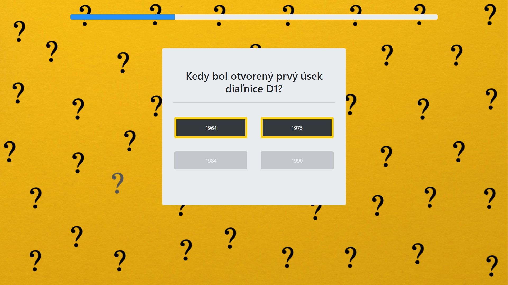

Úlohou tohto návodu je získať základné vedomosti potrebné pre návrh a implementáciu vlastnej hry, vytoriť server a pouzívateľské rozhranie, pracovať s databázou, následné nasadenie riešenia na školský server s verejnou IP adresou a integrácia hry do prostredia OpenLab.
Pri práci na tomto prejekte budete využívať vývojové prostredie IntelliJ IDEA a nasledujúce technológie a nástroje:
Inicializujte projekt, pripojte potrebne kniznice.
Vo vývojovom prostredí IntelliJ IDEA vytvorte nový maven projekt. File → New → Project
Stlačte tlačidlo Next a zadajte artifactId, groupId a verziu projektu.
Zvoľte meno a umiestnenie projektu.
Stiahnite si tento súbor pom.xml. Podľa neho nakonfigurujte vlastný pom.xml súbor. V meta tag mainClass zadajte cestu k triede, v ktorej sa nachádza main funkcia. V našom prípade quiz.QuizServer
Túto časť nakonfigurujte podľa vášho servera. Zadajte url servera a prihlasovacie údaje. V tage dependencies máme pripojene knižnice, potrebne pre pracú na projekte. Ak budete potrebovať ďalšie knižnice, tak ich pridajte do tagu dependencies.
Nakonfigurujte konfiguračné súbory.
Náš projekt má pevnú štruktúru. Logika hry, čiže serverová časť sa nachádza v priečinku java, a klientska časť, v priečinku resources, taktiež sa tam nachádzajú konfiguračné súbory application.properties, application-dev.properties, application-prod.properties. Dajte si ale pozor na tuto štruktúru. Snažte sa zachovať umiestnenie a pomenovanie súborov najme v priečinku resources, je to potrebne pre korektne fungovanie thymeleafu.
V našom prípade využívame služby dátového servera PostgreSQL. Ak ste ho doposiaľ nepoužívali, nainštalujte si databázový systém. Na jeho stiahnutie môžete využiť oficiálnu stránku http://www.postgresql.org/download/ alebo si ho nainštalujte prostredníctvom správcu softvérových balíkov vášho operačného systému. Použite najnovšiu verziu databázového servera dostupnú pre váš systém.
Súbor application-dev.properties bude obsahovať konfiguráciu na pripojenie k databáze, ktorú používate lokálne na vašom počítači. Nezabudnite preto upraviť najmä hodnotu pre meno a heslo.
Súbor application-prod.properties bude obsahovať konfiguráciu na pripojenie k databáze na produkčnom serveri, kde bude vaša hra nasadená.
V priečinok qiuz pridajte triedy QuizServer, RestServiceConfig a SpringBootTomcatApplication. Sú potrebne pre konfiguráciu projektu a jeho spustenie.
Do konfigurácie pre lokálne spustenie projektu, ktorú používame vo vývojovom prostredí IntelliJ IDEA, nastavíme aktívny profil na dev.
Do projektu pridáme konfiguráciu pre Maven na nasadenie aplikácie na produkčný server.
Vytvorenie entit.
Na vytvorenie tabuliek v databáze a prácu s nimi sme do projektu prilinkovali Java framework JPA (java persistence api), vďaka ktorému vieme jednoduchšie pracovať na strane back-endu s databázou.
Ak Vás zaujíma ako JPA funguje môžete si viac prečítať napríklad na tejto stránke alebo na stránkach predmetu Komponentové programovanie.
Nasleduje popis entít, ktoré sa mapujú do databázy. Všetky tieto nájdete v priečinku entity. Náš návod popisuje len sémantický význam jednotlivých atribútov entít takže v prípade, že Vám fungovanie databázy nie je zrejmé je potrebné si to naštudovať. Základné pojmy, ktoré je potrebné poznať sú primárny a cudzí kľúč a ich prepojenie a význam v databáze.
Properties:
Properties:
Properties:
Properties:
Triedy Category a Game do databázy nemapujeme. Tieto triedy sú pomocne a potrebne pre fungovanie hry, takže ich dajte do priečinka core.
Implementácia služieb pre prácu s databázou
V projekte sme si v balíku service vytvorili služby vďaka ktorým vieme ukladať, modifikovať či mazať jednotlivé riadky v tabuľkách.
void register(Player player)
void setPlayerScore(int id, int score)
List< Player> getAllPlayers()
Player getPlayerFromMail(String mail)
Player getPlayerFromID(int id)
Player login(String email, String password)
void saveQuestion(Question question)
Question getQuestion(int id)
Question getQuestion(Category category, int player_id)
List< Category> getCategories(int count)
void incrementAnswerCount(int id)
boolean correctAnswer(int id)
int count(int id)
Triedy, rozhrania a výnimky si môžete stiahnuť tu service. Dajte si ale pozor na názvy package-ov a importov.
Vytvorenie databázy
Naša databáza bude obsahovať 4 entity. Nižšie môžete vidieť relačný diagram, ktorý popisuje entity Answered, Question, Player, Answer
Na začiatok je potrebné vytvoriť databázu s názvom quizstudio. Ak používate PostgreSQL spustíte program pgAdmin a v rámci vášho pripojenia, ktoré sa nachádza v ľavom menu si vytvoríte novú databázu. Môžete si pri tom pomôcť dokumentáciou pre PostgreSQL
logika hry
Hneď na úvodnej stránke je hráč požiadaný aby sa buď zaregistroval alebo prihlásil alebo pokracoval bez registrácie
a prihlásenia.
V tomto prípade ale hráč stráca nárok na aktualizovanie jeho hráčského skóre. Následne sa používateľovi zobrazí
modal s troma kategóriami a potom, čo hráč zvolí jednu z kategorii
vygenerujú sa mu 3 otazky. Tento postup sa opakuje dokopy trikrát.
Počas hry ma hráč možnosť využiť dva druhy nápoved pričom počas jedného kola
môže využiť len jednu. Nápovedy sú typu publikum, kedy sa hráčovi zobrazí v percentách nad každou odpoveďou
koľkokrát bola zvolená práve táto odpoveď.
Ďalšia nápoveda je 50/50. Ako z názvu vyplýva, odstránia sa 2 nesprávne odpovede a ostane jedna
správna a jedna nesprávna.
Po tom ako hráč dohrá tri kolá nasleduje konecné vyhodnotenie hry
s možnosťou zahrať si znova. Hráč taktiež môže podporiť quiz pridaním otázky do databazy.
MVC-model
Model – View – Controller (MVC) je architektonický vzor, ktorý sa bežne používa na vývoj používateľských rozhraní, ktoré rozdeľujú aplikáciu do troch vzájomne prepojených častí. Toto sa robí na oddelenie interných reprezentácií informácií od spôsobu, akým sa informácie prezentujú a prijímajú od používateľa. Návrhový vzor MVC oddelí tieto hlavné komponenty, čo umožňuje opätovné použitie kódu a paralelný vývoj.
Controller
Stiahnite si Controller
Opis jednotlivych RequestMapping
Stiahnuť triedy na mapovanie požiadaviek môžete tu
Pri zobrazení jednotlivých častí nášho kvízu sme použili Bootstrap. Ak sa preň rozhodnete aj vy, máte dve možnosti. Môžete si jednotlivé súbory stiahnuť a nalinkovať do projektu ako ostatné css a js súbory alebo použiť CDN verziu. Príklad nájdete priamo stránke Bootstrapu.
Použili sme základné Bootstrap triedy container a container-fluid, ktoré slúžia na obalenie obsahu stránky. Ďalej sme využili Bootstrap grid a teda viariácie triedy col, ktoré slúžia na rozdelenie a zarovnanie obsahu. Pri zobrazení kategórii sme použili triedu card.
Pri konkrétnej otázke sme triedu jumbotron a pre naštýlovanie jednotlivých odpovedí triedu button. Máme aj časovač, šírka ktorého sa mení v čaše.
Pri otázke zobrazujeme pri stlačení nápovedy odpovede publika percentuálny podiel voľby tejto odpovede. Táto nápoveda sa zobrazí v div elemente, ktorému sa po stlačení zmení hodnota atribútu display z none na block. Tento div má nastavenú pozíciu absolute vzhľadom na rodičovský element.
Ak chcete naštilovať vašu hru ako my, môžete použiť obrázky a fonty z nášho projektu dokonca css, js a html súbory. Nezabudnite ale zachovať štruktúru pre fungovanie thymeleafu.
Interakcia s priestorom OpenLab.
Pri vytváraní projektu sme prihliadali na možnosti, ktoré nám priestor Openlab ponúka. Chceli sme docieliť jednoduchosť používania našej applikácie v priestoroch Openlab a zároveň ponechať funkcionalitu bežnej webovej aplikácie. Okrem interakcie pomocou dotykovej obrazovky sme využili aj RGB svetlá, ktoré boli ponúknuté ako služba samotným Openlabom - v prípade správnej odpovede sa miestnosť rozsvieti na zeleno, v prípade nesprávnej odpovede, alebo vypršania časového limitu na červeno.
Vo vašom riešení môžete použiť ďalšie možnosti ktoré ponuka OpenLab, napríklad ovládanie hlasom. Viac informácii môžete nájsť na tejto stránke OpenLab.
Využitie dotykových obrazoviek.
V priestore Openlab sme pracovali najmä na dotykových obrazovkách. Vďaka jednoduchosti našej webovej applikácie a primeranej veľkosti jednotlivých častí UI, bolo možné použiť rovnakú verziu. Pre ostatné zobrazovacie zariadenia, ktoré nemajú pripojené žiadné vstupné zariadenia, sme využili QR kód, pomocou ktorého je možné prepojiť mobilný telefón s obrazovkou a následne ho používať ako vstupné zariadenie.
Využitie svetiel.
Využili sme ponúknutú REST službu light. Ponúknutá služba musela byť implementovaná na strane servera, pretože JS hádže v browseri CROS Policy error. Link na dokumentáciu: dokumentáciu. Stiahnite si triedu Lights na ovládanie svetlom a umiestnite ju v priečinku core
Configuracia WebSocketu.
Aby dvaja klienti vedeli medzi sebou komunikovať, sme použili WebSocket. Táto technológia nám oproti štandardným rest službám zabezpečí pevné spojenie dvoch koncov. Čiže nebudeme zaťažovať server a každú pol sekundu si pýtať dáta, ale podpíšeme sa na linku, a budeme čakať kým nam server niečo pošle, resp. my niečo pošleme na server a on to prepošle ďalej.
Trieda WebSocketConfig nakonfiguruje socket. Tu sa nastaví aj adresa, na ktorú sa ma pripojiť klient. WebsocketController má funkciu, ktorá presmeruje, všetky prijaté správy, pričom správy sa presmeruju podľa id, ktoré server pridelí klientovi počas vytvorenia spojenia.
Ak používateľ načíta QR kód, bude presmerovaný na stránku kontrolera, ktorý sa pripojí na linku a bude posielať dáta na server, ktorý ich prepošle na 'zariadenie'.
Trieda Message sa používa ako dátová jednotka ktorá putuje socketom. Má v sebe 3 položky: text - vyjadruje spravu, data - sú údaje, ktoré chceme posielať, a func - názov funkcie spolu s jej argumentami, ktorú chceme zavolať. Ak na stránku príde nejaká správa, JavaScript sa pokúsi vykonať funkciu, názov ktorej sa nachadza v položke func pomocou funkcie eval(). Takým spôsobom vieme ovládať stránku pomocou kontrolera.
V nasej hre sme implementovali WebSocket len pre úvodnú stránku. Ako doplnkové zadanie vám ponúkame implementovať WebSocket pre celu hru.
Stiahni a nainštaluj Ideu
Stiahni tu: Idea
Stiahni a nainštaluj PostgreSQL
Stiahni tu: PostgreSQL
Vytvor Databázu cez postgres
Zapni postgres, vytvor prázdnu databázu a ulož si jej názov a heslo.
Stiahni si náš program
Stiahni tu: QuizStudio
Pridaj meno a heslo DB
V súbore src.main.resources.application-dev.poperties, zmen url, meno a heslo svojej databázy z kroku č. 3.